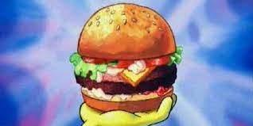

Krabby Patty Recipe

Description:
The Krabby Patty is the Krusty Krab's signature and popular food item.
It is a hamburger of sorts made from seaweed-sea buns,
undersea vegetables, condiments, and a patty; it can also be ordered
with cheese.
Ingredients:
- 1 can (6 ounces) crabmeat, drained, flaked and cartilage
removed
- 3 tablespoons mayonnaise
- 5 teaspoons finely chopped celery
- 1 tablespoon minced green onion
- 2 English muffins, split
- 4 slices tomato
- 4 thin slices cheddar cheese
- 4 thin slices Monterey Jack cheese
- Paprika
Steps:
- Preheat broiler. In a small bowl, mix crab, mayonnaise, celery and
green onion until blended. Place muffin halves on an ungreased baking
sheet.
- Broil 4-6 in. from heat until toasted. Spread with crab mixture. Top
with tomato and cheeses; sprinkle with paprika. Broil until bubbly.